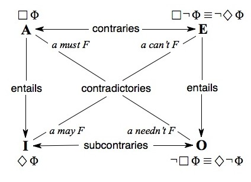
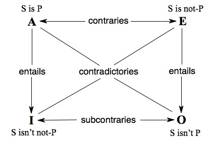

Contradiction
Do I contradict myself?
Very well, then, I contradict myself.
(I am large, I contain multitudes.)
—Walt Whitman, “Song of Myself”
Vorrei e non vorrei.
—Zerlina, “Là ci darem la mano”, Don Giovanni
This entry outlines the role of the law of non-contradiction (LNC) as the foremost among the first (indemonstrable) principles of Aristotelian philosophy and its heirs, and depicts the relation between LNC and LEM (the law of excluded middle) in establishing the nature of contradictory and contrary opposition. §1 presents the classical treatment of LNC as an axiom in Aristotle's “First Philosophy” and reviews the status of contradictory and contrary opposition as schematized on the Square of Opposition. §2 explores in further detail the possible characterizations of LNC and LEM, including the relevance of future contingent statements in which LEM (but not LNC) is sometimes held to fail. §3 addresses the mismatch between the logical status of contradictory negation as a propositional operator and the diverse realizations of contradictory negation within natural language. §4 deals with several challenges to LNC within Western philosophy, including the paradoxes, and the relation between systems with truth-value gaps (violating LEM) and those with truth-value gluts (violating LNC). In §5, the tetralemma of Buddhist logic is discussed within the context of gaps and gluts; it is suggested that apparent violations of LNC in this tradition (and others) can be attributed to either differing viewpoints of evaluation, as foreseen by Aristotle, or to intervening modal and epistemic operators. §6 focuses on the problem of “borderline contradictions”: the range of acceptability judgments for apparently contradictory sentences with vague predicates as surveyed in empirical studies, and the theoretical implications of these studies. Finally, §7 surveys the ways of contradiction and its exploitation in literature and popular culture from Shakespeare to social media.
- 1. LNC as Indemonstrable
- 2. LEM and LNC
- 3. Contradictory Negation in Term and Propositional Logic
- 4. Gaps and Gluts: LNC and Its Discontents
- 5. LNC and the Buddhist Tetralemma
- 6. Vagueness and Borderline Contradictions
- 7. Contradiction in Everyday Life
- Bibliography
- Academic Tools
- Other Internet Resources
- Related Entries
1. LNC as Indemonstrable
The twin foundations of Aristotle's logic are the law of non-contradiction (LNC) (also known as the law of contradiction, LC) and the law of excluded middle (LEM). In Metaphysics Book Γ, LNC—“the most certain of all principles”—is defined as follows:
It is impossible that the same thing can at the same time both belong and not belong to the same object and in the same respect, and all other specifications that might be made, let them be added to meet local objections (1005b19–23).
It will be noted that this statement of the LNC is an explicitly modal claim about the incompatibility of opposed properties applying to the same object (with the appropriate provisos). Since Łukasiewicz (1910), this ontological version of the principle has been recognized as distinct from, and for Aristotle arguably prior to, the logical formulation (“The opinion that opposite assertions are not simultaneously true is the firmest of all”—Met. 1011b13–14) and the psychological formulation (“It is impossible for anyone to believe that the same thing is and is not, as some consider Heraclitus said”—Met. 1005b23–25) offered elsewhere in Book Γ; we return to Heraclitus below. Wedin (2004a), who argues for the primacy of the ontological version (see also Meyer 2008, Other Internet Resources), formalizes it as ¬◊(∃x)(Fx ∧ ¬Fx). These three formulations of LNC differ in important respects, in particular as to whether the law is explicitly modal in character, whether it applies to propositions or to properties and objects, and whether it requires the invocation of a metalinguistic truth predicate. (See also the entry Aristotle on non-contradiction.)
For Aristotle, the status of LNC as a first, indemonstrable principle is obvious. Those who mulishly demand a proof of LNC clearly “lack education”: since “a demonstration of everything is impossible”, resulting in infinite regress. At least some principles must be taken as primitive axiomata rather than derived from other propositions—and what principle more merits this status than LNC? (1006a6–12). In first philosophy, as in mathematics, an axiom is both indemonstrable and indispensable; without LNC, Aristotle argues, “a is F” and “a is not F” are indistinguishable and no argumentation is possible. While Sophists and “even many physicists” may claim that it is possible for the same thing to be and not to be at the same time and in the same respect, such a position self-destructs “if only our opponent says something”, since as soon as he opens his mouth to make an assertion, any assertion, he must accept LNC. But what if he does not open his mouth? Against such an individual “it is ridiculous to seek an argument” for he is no more than a vegetable (1006a1–15).
The celebrated Arab commentator Avicenna (ibn Sīnā, 980–1037) confronts the LNC skeptic with a more severe outcome than Aristotle's vegetable reduction: “As for the obstinate, he must be plunged into fire, since fire and non-fire are identical. Let him be beaten, since suffering and not suffering are the same. Let him be deprived of food and drink, since eating and drinking are identical to abstaining” (Metaphysics I.8, 53.13–15).
The role of LNC as the basic, indemonstrable “first principle” is affirmed by Leibniz, for whom LNC is taken as interdefinable with the Law of Identity that states that everything is identical to itself: “Nothing should be taken as first principles but experiences and the axiom of identity or (what is the same thing) contradiction, which is primitive, since otherwise there would be no difference between truth and falsehood, and all investigation would cease at once, if to say yes or no were a matter of indifference” (Leibniz 1696/Langley 1916: 13–14). For Leibniz, everybody—even “barbarians”—must tacitly assume LNC as part of innate knowledge implicitly called upon at every moment, thus demonstrating the insufficiency of Locke's empiricism (ibid., 77).[1]
In accounting for the incompatibility of truth and falsity, LNC lies at the heart of Aristotle's theory of opposition, governing both contradictories and contraries. (See traditional square of opposition.) Contradictory opposites (“She is sitting”/“She is not sitting”) are mutually exhaustive as well as mutually inconsistent; one member of the pair must be true and the other false, assuming with Aristotle that singular statements with vacuous subjects are always false. As it was put by the medievals, contradictory opposites divide the true and the false between them; for Aristotle, this is the primary form of opposition.[2] Contrary opposites (“He is happy”/“He is sad”) are mutually inconsistent but not necessarily exhaustive; they may be simultaneously false, though not simultaneously true. LNC applies to both forms of opposition in that neither contradictories nor contraries may belong to the same object at the same time and in the same respect (Metaphysics 1011b17–19). What distinguishes the two forms of opposition is a second indemonstrable principle, the law of excluded middle (LEM): “Of any one subject, one thing must be either asserted or denied” (Metaphysics 1011b24). Both laws pertain to contradictories, as in a paired affirmation (“S is P”) and denial (“S isn't P”): the negation is true whenever the affirmation is false, and the affirmation is true when the negation is false. Thus, a corresponding affirmation and negation cannot both be true, by LNC, but neither can they both be false, by LEM. But while LNC applies both to contradictory and contrary oppositions, LEM holds only for contradictories: “Nothing can exist between two contradictories, but something may exist between contraries” (Metaphysics 1055b2): a dog cannot be both black and white, but it may be neither.
As Aristotle explains in the Categories, the opposition between contradictories—“statements opposed to each other as affirmation and negation”—is defined in two ways. First, unlike contrariety, contradiction is restricted to statements or propositions; terms are never related as contradictories. Second, “in this case, and in this case only, it is necessary for the one to be true and the other false” (13b2–3).
Opposition between terms cannot be contradictory in nature, both because only statements (subject-predicate combinations) can be true or false (Categories 13b3–12) and because any two terms may simultaneously fail to apply to a given subject.[3] But two statements may be members of either a contradictory or a contrary opposition. Such statements may be simultaneously false, although (as with contradictories) they may not be simultaneously true. The most striking aspect of the exposition for a modern reader lies in Aristotle's selection of illustrative material. Rather than choosing an uncontroversial example involving mediate contraries, those allowing an unexcluded middle (e.g. “This dog is white”/“This dog is black”; “Socrates is good”/“Socrates is bad”), Aristotle offers a pair of sentences containing immediate contraries, “Socrates is sick”/“Socrates is well”. These propositions may both be false, even though every person is either ill or well: “For if Socrates exists, one will be true and the other false, but if he does not exist, both will be false; for neither ‘Socrates is sick’ nor ‘Socrates is well’ will be true, if Socrates does not exist at all” (13b17–19). But given a corresponding affirmation and negation, one will always be true and the other false; the negation “Socrates is not sick” is true whether the snub-nosed philosopher is healthy or non-existent: “for if he does not exist, ‘he is sick’ is false but ‘he is not sick’ true” (13b26–35).
Members of a canonical pair of contradictories are formally identical except for the negative particle:
An affirmation is a statement affirming something of something, a negation is a statement denying something of something…It is clear that for every affirmation there is an opposite negation, and for every negation there is an opposite affirmation…Let us call an affirmation and a negation which are opposite a contradiction (De Interpretatione 17a25–35).
But this criterion, satisfied simply enough in the case of singular expressions, must be recast in the case of quantified expressions, both those which “signify universally” (“every cat”, “no cat”) and those which do not (“some cat”, “not every cat”).
For such cases, Aristotle shifts from a formal to a semantically based criterion of opposition (17b16–25). Members of an A/O pair (“Every man is white”/“Not every man is white”) or I/E pair (“Some man is white”/“No man is white”) are contradictories because in any state of affairs one member of each pair must be true and the other false. Members of an A/E pair—“Every man is just”/“No man is just”—constitute contraries, since these cannot both be true simultaneously but can both be false. The contradictories of these contraries (“Not every man is just”/“Some man is just”) can be simultaneously true with reference to the same subject (17b23–25). This last opposition of I and O statements, later to be dubbed subcontraries because they appear below the contraries on the traditional square, is a peculiar opposition indeed; Aristotle elsewhere (Prior Analytics 63b21–30) sees I and O as “only verbally opposed”, given the consistency of the I statement, e.g. “Some Greeks are bald”, with the corresponding O statement, “Some Greeks aren't bald” (or “Not all Greeks are bald”, which doesn't necessarily amount to the same thing, given existential import; see traditional square of opposition).
The same relations obtain for modal propositions, for propositions involving binary connectives like “and” and “or”, for quantificational adverbs, and for a range of other operators that can be mapped onto the square in analogous ways utilizing the same notions of contradictory and contrary opposition and with unilateral entailment definable on duals (see Horn 1989). Thus for example we have the modal square below, based on De Interpretatione 21b10ff. and Prior Analytics 32a18–28, where the box and diamond symbols denote necessity and possibility, respectively. As with universal affirmatives and universal negatives, necessity and impossibility constitute contraries: “A priest must marry” and “A priest can’t marry” can both be (and, on the Episcopalian reading, are) false but cannot both be true. “A priest can marry” and “A priest can (if he wants) not marry” are subcontraries; these can be simultaneously true but not simultaneously false. And necessity, as in “A priest must marry”, unilaterally entails its possibility dual counterpart, “A priest may marry”.
(1) Modal Square

In the twelfth century, Peter of Spain (1972: 7) offers a particularly elegant formulation in his Tractatus; it will be seen that these apply to the modal propositions in (1) as well as to the quantificational statements in the original square:
- The law of contradictories is such that if one
contradictory is true the other is false and vice versa, for nothing
can be simultaneously true and false.
- Each contradictory is equivalent to (entails and is entailed by) the negation of the other.
- The law of contraries is such that if one is true the other is false
but not vice versa.
- Each contrary statement entails the negation of the other but not vice versa. [E.g. “I am happy” unilaterally entails “I am not unhappy”; “It is necessary that Φ” unilaterally entails “It is not impossible that Φ”.]
- The law of subcontraries is such that if one is false the other is true but not vice versa.
By these definitions, the three central species of opposition—contradiction, contrariety, and subcontrariety—are mutually inconsistent.
2. LEM and LNC
The law of excluded middle, LEM, is another of Aristotle's first principles, if perhaps not as first a principle as LNC. Just as Heraclitus's anti-LNC position, “that everything is and is not, seems to make everything true”, so too Anaxagoras's anti-LEM stance, “that an intermediate exists between two contradictories, makes everything false” (Metaphysics 1012a25–29). Of any two contradictories p and ¬p, LNC entails that at most one be true while LEM entails that at least one be true. A logic validates LEM if p v ¬p is a theorem in that logic. LEM thus imposes a constraint on logical syntax and is distinct from the Principle of Bivalence, the purely semantic property dictating that any given proposition is either true or false. The latter principle is rejected in some multivalued and supervaluationist logics that validate LEM, a point to which we return in §6 (see also many-valued logics, Sorites Paradox, truth values). Despite the logical distinction between these two principles, in practice they are often conflated.
For Aristotle, the status of LEM and bivalence comes down to the problem of future contingents. In a passage that has launched a thousand treatises, Aristotle (De Interpretatione, Chapter 9) addresses the difficulties posed by apparently contradictory contingent statements about future events, e.g. (2a,b).
(2a) There will be a sea-battle tomorrow.
(2b) There will not be a sea-battle tomorrow.
Clearly, (2a) and (2b) cannot both be true; LNC applies to future contingents as straightforwardly as to any other pair of contradictories. But what of LEM? Here is where the difficulties begin, culminating in the passage with which Aristotle concludes and (apparently) summarizes his account:
It is necessary for there to be or not to be a sea-battle tomorrow; but it not necessary for a sea-battle to take place tomorrow, nor for one not to take place—though it is necessary for one to take place or not to take place. So, since statements are true according to how the actual things are, it is clear that wherever these are such as to allow of contraries as chance has it, the same necessarily holds for the contradictories also. This happens with things that are not always so or are not always not so. With these it is necessary for one or the other of the contradictories to be true or false—not, however, this one or that one, but as chance has it; or for one to be true rather than the other, yet not already true or false. Clearly, then it is not necessary that of every affirmation and opposite negation one should be true and the other false. For what holds for things that are does not hold for things that are not but may possibly be or not be; with these it is as we have said. (De Interpretatione 19a30-b4)
Unfortunately, given the systematic ambiguity and textual variations in the Greek text, the difficulty of telling when Aristotle is speaking with his own voice or characterizing an opponent's argument, and the lack of formal devices for the essential scopal distinctions at issue, it has never been clear exactly just what has been said here and in the chapter more generally. Some, including Boethius and Lukasiewicz, have seen in this text an argument for rejecting LEM for future contingent statements, which are therefore to be assigned a non-classical value (e.g. “Indeterminate”) or no truth-value at all.[4] Their reasoning is based in part on the premise that the alternative position seems to require the acceptance of determinism. Others, however, read Aristotle as rejecting not simple bivalence for future contingents but rather determinacy itself. This interpretive tradition, endorsed by al-Fārābi, Saint Thomas, and Ockham, is crystallized in this passage from Abelard's Dialectica (210–22) cited by Kneale and Kneale (1962: 214):
No proposition de contingenti futuro can be determinately true or determinately false…, but this is not to say that no such proposition can be true or false. On the contrary, any such proposition is true if the outcome is to be true as it states, even though this is unknown to us.
Even if we accept the view that Aristotle is uncomfortable with assigning truth (or falsity) to (2a) and (2b), their disjunction in (3a) is clearly seen as true, and indeed as necessarily true. But the modal operator must be taken to apply to the disjunction as a whole as in (3b) and not to each disjunct as in (3c).
(3a) Either there will be or there will not be a sea-battle tomorrow.
(3b) □ (Φ ∨ ¬Φ)
(3c) □ Φ ∨ □ ¬Φ
For Aristotle, LNC is understood primarily not as the principle that no proposition can be true simultaneously with its negation, but as a prima facie rejection of the possibility that any predicate F could both hold and not hold of a given subject (at the same time, and in the same respect). A full rendering of the version of LNC appearing at Metaphysics 1006b33–34—“It is not possible to truly say at the same time of a thing that it is a man and that it is not a man”—would require a representation involving operators for modality and truth and allowing quantification over times.[5] In the same way, LEM is not actually the principle that every statement is either true or has a true negation, but the law that for any predicate F and any entity x, x either is F or isn't F.
But these conceptualizations of LNC and LEM must be generalized, since the principle that it is impossible for a to be F and not to be F will not apply to statements of arbitrary complexity. We can translate the Aristotelian language, with some loss of faithfulness, into the standard modern propositional versions in (4) and (5) respectively, ignoring the understood modal and temporal modifications:
(4) LNC: ¬(Φ ∧ ¬Φ)
(5) LEM: Φ ∨ ¬Φ
Taking LNC and LEM together, we obtain the result that exactly one proposition of the pair {Φ, ¬Φ} holds, where ¬ represents contradictory negation.
3. Contradictory Negation in Term and Propositional Logic
Not every natural language negation is a contradictory operator, or even a logical operator. A statement may be rejected as false, as unwarranted, or as inappropriate—misleading, badly pronounced, wrongly focused, likely to induce unwanted implicatures or presuppositions, overly or insufficiently formal in register. Only in the first of these cases, as a toggle between truth and falsity, is it clear that contradictory negation is involved (Horn 1989, Smiley 1993). Sainsbury (2004) takes truth-functional contradictory negation to be a special case of a generalized option negation as a deselection operator: If there are two mutually exhaustive and exclusive options A and B, to select A is to deselect B. But the relevant options may involve not truth, but some other aspect of utterance form or meaning as in the standard examples of metalinguistic negation (Horn 1989; see the entry on negation). In such cases, a speaker uses negation metalinguistically or echoically to object to a previous utterance on any grounds whatsoever, including its phonetic or grammatical form, register, or associated presuppositions or implicatures: “That's not a car, it's a Volkswagen”, “Cancer selection is not a but the major force in the emergence of complex animal life”, “He's not your old man, he's your father”, “We didn't call the POlice, we called the poLICE”. In such cases, the relevant target for deselection is what the right thing is to say in a particular context, where “truth is not sufficient for being right, and may not even be necessary” (Sainsbury 2004: 87). Thus the apparent LNC violation (if it's a Volkswagen, it both is and isn't a car) is not a real one.
Given that not every apparent sentential negation is contradictory, is every contradictory negation sentential? Within propositional logic, contradictory negation is a self-annihilating operator: ¬(¬Φ) is equivalent to Φ. This is explicitly recognized in the proto-Fregean Stoic logic of Alexander of Aphrodisias: “‘Not: not: it is day’ differs from ‘it is day’ only in manner of speech” (Mates 1953: 126). The Stoics' apophatikon directly prefigures the iterating and self-cancelling propositional negation of Frege and Russell. As Frege puts it (1919: 130), “Wrapping up a thought in double negation does not alter its truth value.” The corresponding linguistic principle is expressed in the grammarians' bromide, “Duplex negatio affirmat.”
Not all systems of propositional logic accept a biconditional law of double negation (LDN), ¬(¬Φ) ≡ Φ. In particular, LDN, along with LEM, is not valid for the Intuitionists, who reject ¬(¬Φ) → Φ while accepting its converse, Φ → ¬(¬Φ). But the very possibility of applying negation to a negated statement presupposes the analysis of contradictory negation as an iterative operator (one capable of applying to its own output), or as a function whose range is identical to (or a subset of) its domain. Within the categorical term-based logic of Aristotle and his Peripatetic successors, every statement—whether singular or general—is of subject-predicate form. Contradictory negation is not a one-place operator taking propositions into propositions, but rather a mode of predication, a way of combining subjects with predicates: a given predicate can be either affirmed or denied of a given subject. Unlike the apophatikon or propositional negation connective introduced by the Stoics and formalized in Fregean and Russellian logic, Aristotelian predicate denial, while toggling truth and falsity and yielding the semantics of contradictory opposition, does not apply to its own output and hence does not syntactically iterate. In this respect, predicate denial both anticipates the form of negation in Montague Grammar (see the entry on Montague semantics) and provides a more plausible representation of contradictory negation in natural language, whether Ancient Greek or English, where reflexes of the iterating one-place connective of the Stoics and Fregeans (“Not: not: the sun is shining”) are hard to find outside of artificial constructs like the “it is not the case” construction (Horn 1989, §7.2). In a given natural language, contradictory negation may be expressed as a particle associated with a copula or a verb, as an inflected auxiliary verb, as a verb of negation, or as a negative suffix or prefix.
In addition, there is a widespread pragmatically motivated tendency for a formal contradictory negation to be strengthened to a semantic or virtual contrary through such processes as litotes (“I don't like prunes” conveying that I dislike prunes) and so-called neg(ative) raising (“I don't think that Φ” conveying “I think that ¬Φ”). Similarly, the prefixal negation in such adjectives as “unhappy” or “unfair” is understood as a contrary rather than contradictory (not-Adj) of its base. These phenomena have been much discussed by rhetoricians, logicians, and linguists (see the entry on negation and Horn 1989: Chap. 5).
In addition to predicate denial, in which a predicate F is denied of a subject a, Aristotelian logic allows for narrow-scope predicate term negation, in which a negative predicate not-F is affirmed of a. The relations of predicate denial and predicate term negation to a simple affirmative proposition (and to each other) can be schematized on a generalized square of opposition for singular (non-quantified) expressions (De Interpretatione 19b19–30, Prior Analytics Chapter 46):
(6) Negation Square

If Socrates doesn't exist, “Socrates is wise” (A) and its contrary “Socrates is not-wise” (E) are both automatically false (since nothing—positive or negative—can be truly affirmed of a non-existent subject), while their respective contradictories “Socrates is not wise” (O) and “Socrates is not not-wise” (I) are both true. Similarly, for any object x, either x is red or x is not red—but x may be neither red nor not-red; if, for instance, x is a unicorn or a prime number.
While Russell (1905) echoed (without acknowledgment) Aristotle's ambiguist analysis of negation as either contradictory (“external”) or contrary (“internal”), by virtue of the two logical forms assigned to “The king of France is not bald” (see descriptions), such propositionalized accounts are bought at a cost of naturalness, as singular sentences of subject-predicate grammatical form are assigned the logical form of an existentially quantified conjunction and as names are transmuted into predicates.
The difference between denying P of S and affirming not-P of S is realized in Ancient Greek as a scopal distinction reflected in word order: S P [not is] (Socrates healthy not-is) vs. S [not P] is (Socrates not-healthy is). As indicated in (6), for Aristotle only sentences can be in contradictory opposition. P and not-P both yield falsity when predicated of a non-existent subject but one or the other of the two terms is truthfully predicable of any existent subject in the relevant domain. P and not-P are “logical contraries” that exclude a true middle, an existent entity which is neither P nor not-P. But naturally occurring cases of prefixal adjectives, those marked by a(n)- in Greek, may involve an unexcluded middle, as do polar contraries or antonym pairs. Modern grammatical discourse departs from Aristotle in allowing for contradictory terms: middle-allowing contrary adjectives (white/black, happy/unhappy) are distinguished from middle-excluding contradictory adjectives (transitive/intransitive, alive/dead).
Jespersen (1917: 144) describes the logical status of negatively prefixed adjectives in English:
The modification in sense brought about by the addition of the prefix [un-] is generally that of a simple negative: unworthy = ‘not worthy’, etc. The two terms [P, unP] are thus contradictory terms. But very often the prefix produces a “contrary” term…: unjust (and injustice) generally imply the opposite of just (justice); unwise means more than not wise and approaches foolish, unhappy is not far from miserable, etc.
Like Aristotle, Jespersen predicts that the negation of true contraries like unhappy, unjust, or unwise will be semantically distinct from their positive bases. Thus, not unhappy fails to reduce to happy by virtue of allowing an unexcluded middle: one can be neither happy nor unhappy but just blaah, in the same way that something can be neither black nor white but one of the fifty-plus shades of gray. At the same time, even those adjectives that are semantic contradictories, e.g. impossible, may be coerced under negation into virtual contraries. While technically any action or event must be either possible or impossible, to assess something as not impossible is often to portray its occurrence as a more remote possibility than to assess it as possible simpliciter, as reflected in attestations of “It’s possible, or at least not impossible”. Similar instances of virtual contrariety are readily attested with negated verb phrases (“I don’t NOT love the dog” ≠ I love the dog) or predicate nominals (“We’re not NOT friends” ≠ We’re friends); see Horn 2017.
Drawing on an epistemic theory of vagueness, Krifka (2007) argues that prefixal negation always yields semantic contradictories. On this view, unhappy is literally just ‘not happy’, with the characteristic stronger understanding derived pragmatically. The incomplete cancellation of the two negators in not unhappy is taken to be a purely pragmatic phenomenon, conflating this case with that of not impossible. But the classical theory has its advantages. On that approach, un-Adj antonyms (like their morphologically simplex classmates, sad or bad) are lexical items that can constitute contraries vis-à-vis the corresponding positive. By virtue of their lexical status, they are candidates to undergo further semantic drift, unlike not Adj sequences (or non-Adj forms), as evidenced in the semantic and phonological opacity of infamous or impious. Note too that many un- and in- adjectives (unkempt, inchoate, incorrigible) lack corresponding simple bases. Furthermore, the prefix non- yields staunch contradictories (typically with objective and/or technical senses) often contrasting minimally with un-Adj or iN-Adj contraries favoring gradable and evaluative contexts:
- non-American vs. un-American; non-professional vs. unprofessional
- non-Christian vs. un-Christian; non-rational vs. irrational
- non-moral vs. immoral; non-realistic vs. unrealistic
- non-natural vs. unnatural; non-scientific vs. unscientific
Even more problematically for a unified treatment, the treatment of all negatively prefixed adjectives as semantic contradictories would seem naturally to extend from unhappy or unwise to simplex antonymic pairs like happy/sad or wise/foolish, where the evidence for semantic contrariety appears to be incontrovertible. While Krifka (2007: 174) supports the analysis of e.g. happy and unhappy as “literally contradictories that receive their interpretations as contraries only via pragmatic strengthening”, Horn (2017) argues that a traditional (neo-Aristotelian) approach invoking parallel but distinct semantic and pragmatic strengthening processes is on sounder empirical footing.
4. Gaps and Gluts: LNC and Its Discontents
In addition to the future contingent statements discussed in §2, vacuous subjects like those in (7a,b) have sometimes been taken to yield a violation of LEM through the emergence of a truth-value gap.
(7a) {The present king of France/King Louis} is bald.
(7b) {The present king of France/King Louis} isn't bald.
While Aristotle would see a republican France as rendering (7a) false and (7b) automatically true, Frege (1892) and Strawson (1950) reject the notion that either of these sentences can be used to make a true or false assertion. Instead, both statements presuppose the existence of a referent for the singular term; if the presupposition fails, so does the possibility of classical truth assignment. Note, however, that such analyses present a challenge to LEM only if (7b) is taken as the true contradictory of (7a), an assumption not universally shared. Russell, for example, allows for one reading of (7b) on which it is, like (7a), false in the absence of a referent or denotatum for the subject term; on that reading, on which the description has primary occurrence, the two sentences are not contradictories. In this way, Russell (1905: 485) seeks to guide the French monarch out of the apparent trap without recourse to wigs or truth value gaps:
By the law of the excluded middle, either ‘A is B’ or ‘A is not B’ must be true. Hence either ‘the present king of France is bald’ or ‘the present king of France is not bald’ must be true. Yet if we enumerated the things that are bald and the things that are not bald, we should not find the king of France on either list. Hegelians, who love a synthesis, will probably conclude that he wears a wig.
In those systems that do embrace truth value gaps (Strawson, arguably Frege) or non-classically-valued systems (Łukasiewicz, Bochvar, Kleene), some sentences or statements are not assigned a (classical) truth value; in Strawson's famous dictum, the question of the truth value of “The king of France is wise”, in a world in which France is a republic, simply fails to arise. The negative form of such vacuous statements, e.g. “The king of France is not wise”, is similarly neither true nor false. This amounts to a rejection of LEM, as noted by Russell 1905. In addition to vacuous singular expressions, gap-based analyses have been proposed for future contingents (following one reading of Aristotle's exposition of the sea-battle; cf. §2 above) and category mistakes (e.g. “The number 7 likes/doesn't like to dance”).
While LNC has traditionally remained more sacrosanct, reflecting its position as the primus inter pares of the indemonstrables, transgressing this final taboo has become increasingly alluring in recent years. The move here involves embracing not gaps but truth value gluts, cases in which a given sentence and its negation are taken to be both true, or alternatively cases in which a sentence may be assigned more than one (classical) truth value, i.e. both True and False. Parsons (1990) observes that the two non-classical theories are provably logically equivalent, as gluts arise within one class of theories precisely where gaps do in the other; others, however, have argued that gaps (as in Intuitionist non-bivalent logics) are easier to swallow than gluts (see papers in the Priest et al. 2004 collection for further debate). Dialetheists reject the charge of incoherence by noting that to accept some contradictions is not to accept them all; in particular, they seek to defuse the threat of logical armageddon or “explosion” posed by Ex Contradictione Quodlibet, the inference in (8):
(8) p, ¬p
_____
∴q
Far from reduced to the silence of a vegetable, as Aristotle ordained, the proponents of true contradictions, including self-avowed dialetheists following the lead of Sylvan (né Routley) and Priest have been eloquent.
Is the status of Aristotle's “first principle” as obvious as he believed? Adherents of the dialetheist view that there are true contradictories (Priest 1987, 1998, 2002; see also the entries on dialetheism and paraconsistent logic) would answer firmly in the negative.[6] In the Western tradition, the countenancing of true contradictions is typically—although not exclusively—motivated on the basis of such classic logical paradoxes as “This sentence is not true” and its analogues; such a statement is evidently true if and only if it is not true. The Liar, or really the family of Liar’s paradoxes (see Liar Paradox), and Russell’s paradox, its set-theoretic analogue (a set that is not a member of itself both is and is not a member of itself—see the entry on Russell’s Paradox), would no longer constitute immediate threats to logical coherence in the absence of LNC (see papers in Priest et al. for extended discussion). If we are indeed prepared to jettison LNC, we can regard “This sentence is not true” (or “This statement is false”) as simultaneously true and not true without deriving the resultant absurdity taken by Aristotle and his heirs to result from such a contradiction. As Smiley (1993: 19) has remarked, “Dialetheism stands to the classical idea of negation like special relativity to Newtonian mechanics: they agree in the familiar areas but diverge at the margins (notably the paradoxes).”
Related to the classic paradoxes of logic and set theory is the Paradox of the Stone. One begins by granting the basic dilemma, as an evident instance of LEM: either God is omnipotent or God is not omnipotent. With omnipotence, He can do anything, and in particular He can create a stone, call it s, that is so heavy even He cannot lift it. But then there is something He cannot do, viz. (ex hypothesi) lift s. But this is a violation of LNC: God can lift s and God cannot lift s. This paradox, and the potential challenge it offers to either LNC or the possibility of omnipotence, has been recognized since Aquinas, who opted for retaining the Aristotelian law by understanding omnipotence as the capacity to do only what is not logically impossible. (Others, including Augustine and Maimonides, have noted that in any case God is “unable” to do what is inconsistent with His nature, e.g. commit sin.) For Descartes, on the other hand, an omnipotent God is by definition capable of any task, even those yielding contradictions. Mavrodes (1963), Kenny, and others have sided with St. Thomas in taking omnipotence to extend only to those powers it is possible to possess; Frankfurt (1964), on the other hand, essentially adopts the Cartesian line: Yes, of course God can indeed construct a stone such that He cannot lift it—and what's more, He can lift it! (See also Savage 1967 for a related solution.)
As we have seen, the target of Aristotle's psychological (doxastic) version of LNC was Heraclitus: “It is impossible for anyone to believe that the same thing is and is not, as some consider Heraclitus said—for it is not necessary that the things one says one also believes” (Met. 1005b23–26). But as Aristotle acknowledges here (even if he is less politic elsewhere), there is considerable uncertainty over exactly what Heraclitus said and what he believed. Heraclitus could not have literally rejected LNC, as he is often accused of (or praised for) doing, as his writings preceded the statement of that principle in Metaphysics Γ by well over a century. But the question remains: do his words, as represented in the extant fragments, anticipate the Dialetheists and other rejectionists? Yes and no. To be sure, Heraclitus was proud to wear the mantle of “paradoxographer” (Barnes 1982: 80) and enjoyed nothing more than to épater les bourgeois of his day. But the key fragments supporting his proclamation of the Unity of Opposites can be taken in more than one way. He points out that sea water is salutary (if you're a fish) and unhealthy (if you're a human), just as garbage is preferable to gold (for a donkey) but then again it isn't (for a person). And given the inevitability of flux (as Heraclitus memorably illustrated by his river into which one cannot step twice), what is true (today) is also false (tomorrow). But these astute observations do not so much refute the LNC as much as demonstrate (through what Barnes calls the Fallacy of the Dropped Qualification) the need for Aristotle's crucial codicil: sea water, for example, cannot be both healthful and unhealthful for the same experiencer at the same time and in the same respect. (In a similar way, “It is raining” may of course be deemed true at this moment in Seattle and false in Palo Alto; we need admit no contradiction here, whether we deal with the issue by endorsing unarticulated constituents or in some other manner; cf. Recanati 2002 inter alia.) Ultimately, whether one follows Kirk (Heraclitus [1954]) in charging Aristotle with misrepresenting Heraclitus as an LNC-denier or sides with Barnes (1982) and Wedin (2004b) in sustaining Aristotle's accusation, it is hard to see in what respect the evidence presented by Heraclitus, however subtle a guide he may be for our travels on that path on which up and down is one and the same, threatens the viability of LNC. (See also Heraclitus.)
Within the modern philosophical canon, Hegel has often been seen as the echt LNC-skeptic, well before his reputed deathbed lament, “Only one man ever understood me, and he didn't understand me.” Hegel saw himself as picking up where Heraclitus left off—“There is no proposition of Heraclitus which I have not adopted in my logic” (Barnes 1982: 57)—and indeed the Heraclitean view of a world shaped by the unity of opposites through strife and resolution does seem to foreshadow Hegelian dialectic. In fact, however, an unresolved contradiction was a sign of error for Hegel. The contradiction between thesis and antithesis results in the dialectical resolution or superseding of the contradiction between opposites as a higher-level synthesis through the process of Aufhebung (from aufheben, a verb simultaneously interpretable as 'preserve, cancel, lift up'). Rather than repudiating LNC, Hegel's dialectic rests upon it. In Marxist theory, too, contradictories do not simply cancel out but are dynamically resolved (aufgehoben) at a higher level in a way that both preserves and supersedes the contradiction, motivating the historical dialectic. (See Horn 1989: §1.3.2.)
For Freud, there is a realm in which LNC is not so much superseded but dissolved. On the primary, infantile level, reflected in dreams and neuroses, there is no not: “‘No’ seems not to exist as far as dreams are concerned. Anything in a dream can mean its contrary” (Freud 1910: 155). When the analysand insists of a dream character “It's not my mother”, the analyst knowingly translates, “So it is his mother!” Freud sought to ground this pre-logical, LNC-free (and negation-free) realm not just in the primal realm of the dreamer's unconscious but also in the phenomenon of Gegensinn, words (especially Urworte, primal words) with two opposed meanings purported attested widely in ancient and modern languages. The empirical basis for this latter claim, however, has been widely discredited; see Benveniste 1956.
Given Aristotle's observation (Metaphysics 1006a2) that “even some physicists” deny LNC and affirm that it is indeed possible for the same thing to be and not to be at the same time and in the same respect, he might not have been surprised to learn that quantum mechanics has brought such challenges once more into play. Thus, we have Schrödinger's celebrated imaginary cat, placed (within the context of a thought experiment) inside a sealed box along with radioactive material and a vial of poison gas that will be released if and only if that material decays. Given quantum uncertainty, an atom potentially inhabits both states—decayed and non-—simultaneously, seeming to render the cat (in the absence of an observer outside the system) both alive and dead. But most physicists would argue that while quantum mechanics may challenge some aspects of classical logic it does not threaten LNC. If we could in fact observe a cat, or a particle, as A and not-A at the same time, then there would be a violation of the Law of Non-Contradiction; the mere potential for an entity to be in either of two mutually inconsistent states does not in itself violate the LNC.
As we have seen, Aristotle himself anticipated many of the challenges that have since been raised against LNC. One more such challenge is posed by the ubiquity of doxastic inconsistency. Take the desires of Oedipus, for example. In seeking Jocasta as his mate, did he wish to marry his mother? Certainly he did on the de re reading: Oedipus's mother (Jocasta) is such that he wanted to marry her, although he would not have assented to the claim that he wanted to marry his mother. In a sense, then, “Oedipus wanted to marry his mother” is true (de re) and false (de dicto), but no violation of LNC is incurred, since these represent different propositions, the semantic distinction neutralized within the sentential form. But what of the de dicto reading itself: it is really false? After all, as a young boy Oedipus can be assumed (by some) to have exhibited the eponymous complex, according to which the falsity of the (de dicto) proposition that he wanted to marry his mother on a conscious level belies the truth of this proposition on an unconscious level. But this does not entail that he both wished and did not wish to “marry” his mother at the same time and in the same respect. Whether it concerns the unacknowledged incestuous conflict of the Theban king, the indecision of Zerlina's “Vorrei e non vorrei” response to Don Giovanni's invitation, or the unspecified ambivalence of the respondent in Strawson's exchange (1952: 7)
—Were you pleased?
—Well, I was and I wasn't.
we have ample opportunity to reflect on the foresight of Aristotle's rider: “a is F” and “a is not F” cannot both hold in the same sense, at the same time, and in the same respect.
5. LNC and the Buddhist Tetralemma
Beyond the Western canon, the brunt of the battle over LNC has been largely borne by the Buddhists, particularly in the exposition by Nāgārjuna of the catuṣkoṭi or tetralemma (c. 200 A.D.; cf. Bochenski 1961: Part VI, Raju 1954, Garfield 1995, Tillemans 1999, Garfield & Priest 2002), also known as the four-cornered or fourfold negation. Consider the following four possible truth outcomes for any statement and its (apparent) contradictory:
(9) (i) S is P (ii) S is not P (iii) S is both P and not-P (iv) S is neither P nor not-P
For instances of the positive tetralemma, on Nāgārjuna's account, all four statement types can or must be accepted:
Everything is real and not real.
Both real and not real.
Neither real nor not real.
That is Lord Buddha's teaching.
—Mūla-madhyamaka-kārikā 18:8, quoted in Garfield (1995: 102)
Such cases arise only when we are beyond the realm to which ordinary logic applies, when “the sphere of thought has ceased.” On the other hand, more use is made of the negative tetralemma, in which all four of the statements in (9) can or must be rejected, and thus one cannot assert either Φ, ¬Φ, both Φ and ¬Φ, or neither Φ nor ¬Φ. Is this tantamount, as it appears, to the renunciation of LEM and LNC, the countenancing of both gaps and gluts, and thus—in Aristotle's view—the overthrow of all bounds of rational argument?
It should first be noted that the axiomatic status of LNC and LEM is as well-established within the logical traditions of India as it is for the Greeks and their epigones.[7] Garfield (1995) and Tillemans (1999) convincingly refute the claim that Nāgārjuna was simply an “irrationalist”.[8] In the first place, if Nāgārjuna simply rejected LNC, there would be no possibility of reductio arguments, which hinge on the establishment of untenable contradictions, yet such arguments are standardly employed in his logic. In fact, he explicitly prohibits virodha (contradiction). Crucially, it is only in the realm of the Absolute or Transcendent, where we are contemplating the nature of the ultimate, that contradictions are embraced; in the realm of ordinary reality, LNC operates and classical logic holds. (Recall Freud's dichotomy between the LNC-observant conscious mind and the LNC-free unconscious.) In this sense, the logic of Nāgārjuna and of the Buddhist tradition more generally can be seen not as inconsistent but paraconsistent. Indeed, just as Aristotle ridiculed LNC-skeptical sophists as no better than vegetables (see §1), the Buddhists dismissed the arch-skeptic Sanjaya and his followers, who refused to commit themselves to a definite position on any issue, as “eel-wrigglers” (amarāvikkhepa). Sanjaya himself was notorious for his periodic lapses into the extended silence Aristotle described as the last refuge of the LNC-skeptic (see Raju 1954).
One aspect of the apparent paradox is precisely parallel to that arising with some of the potential counterexamples to the LNC arising in Western thought. In various Buddhist and Jainist systems of thought, the apparent endorsement of Fa & ¬Fa (or, in propositional terms, Φ ∧ ¬Φ) is upon closer examination qualified in precisely the way foreseen by the codicils in Aristotle's statement of the law: From a certain viewpoint, Φ (e.g. Nirvana exists); from a certain viewpoint, ¬Φ (e.g. Nirvana does not exist). (Compare the observation of Jainists two millennia ago that “S is P” and “S is not P” can both be true from different standpoints; cf. Raju 1954: 698–701; Balcerowicz 2003.)
To further explore the status of truth-value gluts, in which both classical values are simultaneously assigned to a given proposition (e.g. “x is real”), let us consider the analogous cases involving gaps. Recall, for example, the case of future contingents as in (2a,b) above: we need not maintain that “Iraq will become a secular democracy” is neither true nor false when uttered today, but only that neither this statement nor its contradictory “Iraq will not become a secular democracy” is assertable today in the absence of foreknowledge. Similarly for past unknowables, such as (to adapt an example from Quine) the proposition that the number of blades of grass on the Old Campus lawn during the 2005 Yale commencement exercises was odd. This is again more plausibly viewed as unassertable than as truth-valueless, even though its truth-value will never be known. To take a third example, we can argue, with Grice (1989: 80ff.), that a negation outside the scope of a conditional is generally intended as a refusal (or hesitation) to assert “if p then q” rather than as the contradictory negation of a conditional, whose truth value is determined in accord with the standard material equivalence:
(10) ¬(p→q) ≡ (p & ¬q)
Thus, in denying your conditional “If you give her penicillin, she will get better”, I am allowing for the possibility that giving her penicillin might have no effect on her, but I am not predicting that you will administer the penicillin and she will fail to recover. Nor does denying the apothegm (typically though inaccurately attributed to Dostoyevsky or Nietzsche) that if God is dead everything is permitted commit one to the conjoined proposition that God is dead and something is forbidden. As Dummett (1973: 328–30) puts the point, we must distinguish negation outside the scope of a Fregean assertion operator, not (⊢p), from the assertion of a negative proposition, ⊢(not p). The former interpretation “might be taken to be a means of expressing an unwillingness to assert” p, in particular when p is a conditional:
(11) X: If it rains, the match will be canceled. Y: That's not so. (or, I don't think that's the case.)
Y's contribution here does not constitute a negation of X's content; rather, we can paraphrase Y as conveying (11′a) or (11′b):
(11′a) If it rains, the match won't necessarily be canceled.
(11′b) It may [epistemic] happen that it rains and yet the match is not canceled.
Dummett observes, “We have no negation of the conditional of natural language, that is, no negation of its sense: we have only a form for expressing refusal to assent to its assertion.”
Similarly with disjunction. Consider the exchange in (12) preceding the 2000 election, updated from an example of Grice:
(12) X: Bush or Gore will be elected. Y: That's not so: Bush or Gore or Nader will be elected.
Y's rejoinder cannot be a contradictory of the content of X's claim, since the (de jure) election of Bush rendered both X's and Y's statements true. Rather, Y objects on the grounds that X is not in an epistemic position to assert the binary disjunction.
Unassertability can be read as the key to the apparent paradox of the catuṣkoṭi as well. The venerable text in Majjhima-nikāya 72, relating the teachings of the historical Buddha, offers a precursor for Nāgārjuna's doctrine of the negative tetralemma. Gotama is responding to a monk's question concerning the doctrine of rebirth (quoted in Robinson 1967: 54):
Gotama, where is the monk reborn whose mind is thus freed?
Vaccha, it is not true to say that he is reborn.
Then, Gotama, he is not reborn.
Vaccha, it is not true to say that he is not reborn.
Then, Gotama, he is both reborn and not reborn.
Vaccha, it is not true to say that he is both reborn and not reborn.
Then, Gotama, he is neither reborn nor not reborn.
Vaccha, it is not true to say that he is neither reborn nor not reborn.
Note the form of the translation here, or similarly that of the standard rendering of the negative catuṣkoṭi that “it profits not” to assert Φ, to assert ¬Φ, to assert both Φ and ¬Φ, or to assert neither Φ nor ¬Φ: the relevant negation can be taken to operate over an implicit modal, in particular an epistemic or assertability operator. If so, neither LEM nor LNC is directly at stake in the tetralemma: you can have your Aristotle and Buddha too.
We tend to recalibrate apparent violations of LNC as conforming to a version of the law that incorporates the Aristotelian qualifications: a sincere defense of “p and not-p” plausibly involves a change in the context of evaluation or a shift in viewpoint, or alternatively a suppression of modal or epistemic operators. This practice can be seen as an instance of a general methodological principle associated with Davidson and Quine that has come to be called the principle of charity (or, alternately, the principle of rational accommodation): when it is unclear how to interpret another's argument, interpret it in a way that makes the most sense. At the same time, this procedure evokes the standard Gricean mode of explanation (Grice 1989; see the entry on implicature): granted the operation of the Cooperative Principle and, more broadly, the shared premise of rationality, we reinterpret apparent violations of valid principles or maxims so as to conserve the assumption that one's interlocutor is a rational and cooperative agent. And as Aristotle would remind us, no principle is more worthy of conservation than the Law of Non-Contradiction.
6. Vagueness and borderline contradictions
We have seen that two of the more significant threats to the unchallengeable status of LNC tend to dissolve under closer scrutiny. Heraclitus-type contradictions (Sea water is healthy and sea water is not healthy) are rendered LNC-compatible by the Aristotelian rider designed for that purpose (“a is F” and “a is not F” cannot both hold in the same sense, at the same time, and in the same respect) once the “dropped qualification” or contextual specification is restored (§4). Buddhist-type contradictions (Nirvana exists and Nirvana does not exist) can be understood as modalized, embedded under an epistemic modal or assertability operator.
We are left with two significant challenges for LNC: (i) the case of the Liar and related paradoxes of self-reference as touched on in §3 and work cited therein (see the entries on Liar Paradox, Russell’s Paradox, Dialetheism, Paraconsistent Logic) and (ii) the case of vagueness and its implications for borderline truth, discussed in this section. As we have seen, the admission of truth-value gaps (exceptions to LEM) is mirrored by the admission of truth-value gluts (exceptions to LNC). As intellectual heirs of the Hegelian tradition, Marxists have willing to accept paradox, and indeed the pre-Revolutionary theorist Plekanov (1909) suggests that Sorites (in the form of the bald man; see sorites entry) can be resolved by rejecting LNC. Hyde (1997) traces the history of vagueness-based arguments for paraconsistency from Plekhanov through Jaśkowski, McGill, and Parry in the 1940s to the dialetheist logics of today. Pointing out the parallels between treatments of vagueness via truth-value gap theories (including the supervaluation theory of van Fraassen 1969) and their truth-value glut counterparts, Hyde laments the unwarranted neglect of the latter option: “The thought that an adequate response might require the recognition of cases of overdetermination and and truth-value gluts has few supporters” (Hyde 1997: 641). In the two decades since the publication of his important paper, that neglect has been largely rectified, especially with the accretion of empirical support for glut-oriented approaches endorsing the acceptability of a range of true contradictions of the form a is P and a is not P, in particular when P is a vague predicate like tall, vague, or red.
Supervaluation theory utilizes the concept of admissible sharpening or precisification of vague predication (see the entry on vagueness). I may be unable to assert truthfully of a given color chip in the red-orange range that it is red, while also being unable to assert that it is not red. Once the notion of red is sharpened or precisified to a particular interval of wave-lengths, I am in a position to assert either the positive proposition “a is red” or its negation “a is not red”, but which one depends on the details of the sharpening. A sentence S is supertrue iff it is true on every sharpening and superfalse if it is false on every sharpening; if is true on some sharpenings and false on others, it is neither supertrue nor superfalse, thus corresponding to a truth-value gap. One salutary result of this approach is that LEM can be retained: P or not P is supertrue since it is true on every sharpening. Hyde (1997) draws on the dual status of gaps and gluts to define a paraconsistent “subvaluation” theory: S is subtrue iff is true on at least one sharpening, subfalse iff it is false on at least one sharpening, and neither subtrue nor subfalse if it is true on some sharpenings and false on others. Given the status of supervaluation and subvaluation as duals, each is equally defensible and applicable to the semantics of vagueness. Crucially, it is the notion of supertruth, or subtruth as the case may be, that tracks our natural language intuitions of truth, and similarly for falsity. In this sense, the logic of supervaluation is paracomplete (allowing for violations of LEM) and the logic of subvaluation paraconsistent (allowing for violations of LNC). In the tradition of paraconsistent logics, Hyde stresses the need for “quarantining the gluts” to avoid the explosive consequences of ex contradictione quodlibet (see §4).
Where supervaluation theory allows a is not tall or a is not bald to be neither (super)true nor (super)false if a represents a borderline instance of tallness, subvaluation theory would characterize such an assessment as both (sub)true and (sub)false. But since tautologies are preserved if validity is defined in terms of truth and not subtruth (or supertruth)—an assumption that some might challenge—a is tall and a is not tall can never be true, even when a is tall and a is not tall are both true:
A vague sentence ‘A’ and its negation might both be true (since they each have some true disambiguation—i.e. the sentence ‘A’ itself as some true and some false disambiguation—but their conjunction can never be. ‘A & ¬A’ has only false disambiguations; LNC is retained. (Hyde 1997: 654)
For Akiba (1999), however, paraconsistent subvaluation theories, like paracomplete supervaluation theories, should be recast in a modal light, by supplying an epistemic possibility operator Pos in the former case (reminiscent of the modalized accounts of the tetralemma explored in §5) and its dual, an abstract modal concept Akiba defines as Def (corresponding to necessary truth) in the latter. Thus, while P & ¬P remains a full-fledged contradiction, its modalized counterpart Pos(P) & Pos(¬P) is coherent, and while P v ¬P is a valid instance of LEM, Def(P) v Def(¬P) is not: “Super- and subvaluation systems can be considered not really alternatives to classical logic but in fact just modal extensions of it.” Akiba’s key departure from Hyde’s approach is in rejecting the move to identify truth simpliciter with subtruth (or supertruth).
Confronted with the task of applying semantically vague predicates like tall and red to borderline cases, the intuitions of respondents in psycholinguistic studies often tend to become uncertain. Subjects produce varying responses for the crucial data, and the framers of the studies have produces varying explanations for the data. In one of the earlier studies, Bonini et al. point to the asymmetries in judgments of truth and falsity for borderline cases of a is red/tall and ultimately reject truth-gap and truth-glut accounts in favor of an LEM- and LNC-compatible epistemic theory of “vagueness as ignorance”. That is, the subject S “mentally represents vague predicates in the same way as other predicates with sharp true/false boundaries of whose location S is uncertain” (Bonini et al. 1999: 387).
Kyburg (2000) offers a pragmatic explanation for why a is tall might be judged neither true nor false in a case of borderline tallness, or why a is tall and a is not tall might be judged true in the same circumstance. Without conceding gaps or gluts, she points to a disconnect between truth-value intuitions and assertability intuitions for a cooperative speaker aiming to be maximally informative. Of course, in some cases, the felicity of a is tall and a isn’t tall might simply reflect the awareness that different cut-off points apply depending on the relevant comparative class of entities (children vs. adults, male adults vs. male professional basketball players, etc.)—the instances foreseen by the Aristotelian rider. But in other cases, such a statement would indeed convey that a possesses a borderline degree of tallness, while simply affirming or denying the vague predicate—a is tall or a is not tall—would communicate too high or too low a degree. Just as speakers might a sentence might refrain from uttering, or classifying as true, a perfectly and “sharply” true sentence whose use would mislead the hearer—Snow is white or snow is purple—so too the assertion of a conjunction of opposites in borderline cases—a is tall and he’s not tall—might be preferred, despite its contradictory nature, to the misleading assertion of either a is tall or a is not tall in the same circumstance.
For Sorensen (2001), an individual’s acceptance of the truth of certain false claims, including those necessarily false claims of the form a is tall and a is not tall, reflect not the inadequacy of our semantic and logical analyses but the tendency for speakers to be wrong, confused, or ignorant about the truth conditions of given sentences or about their own beliefs, especially those involving vagueness, similarly to the way in which perceptions can mislead in the case of visual illusions.
The vagueness-as-ignorance theory of Bonini et al. (1999), the modal theory of Akiba (1999), the assertability theory of Kyburg (2000), and the error theory of Sorensen (2001) are all semantically classical in their preservation of LNC (along with LEM and bivalence). In essence, each of these approaches to the assessment of vague predications reflects a wariness about jettisoning the classical account of truth and contradiction in favor of an approach endorsing either supervaluations (and gaps) or subvaluations (and gluts). Despite the difficulties posed by vagueness, these theorists would thus adopt the philosophical corollary to the familiar legal adage: “Hard cases make bad laws.”
In two recent papers the reconciliatory approach is rejected in favor of defenses of paraconsistency, although not precisely along the lines laid out by Hyde. On Hyde’s account, a is tall and a is not tall can both be true when a is borderline tall (say, 5′11″) while the full or reduced conjunction of these statements, a is tall and (a is) not tall, will be false, given the standard supervaluationist approach. Alxatib & Pelletier, however, find the opposite judgments among a majority of the subjects of their study, who accept the conjunction while rejecting the individual ascriptions of truth. In addition to reinforcing the view of gappy and glutty theories as mirror images, Alxatib & Pelletier present their results as evidence against the neo-classical vagueness-as-ignorance position of Bonini et al. (1999), a position which also has difficulty accounting for the paucity of subjects choosing the “can’t tell” option in the surveys. Like the assertability-based pragmatic theory of borderline contradictions proposed by Kyburg, Alxatib & Pelletier (2011: 321) offer a Gricean explanation for subjects’ endorsement of the truth of apparent contradictory statements—a is tall and not tall when a is just short of 6 feet tall—which yields (in just this case) a subvaluationary interpretation on which the speaker is taken to convey the borderline status of a’s height. Their central finding (2011: 298–9) is that theories admitting truth-value gaps like that of Hyde (1997) or the paraconsistent logic of Priest 2006 fare better in accounting for the full range of interesting data presented in their experiments—and those of Ripley 2011.
Like Alxatib & Pelletier, Ripley (2011: §2) conducts his own survey of reactions to apparent contradictions involving vague predications (e.g., “The circle is both is and isn’t near the square”; “The circle neither is nor isn’t near the square”). He leverages the results of his study to argue against error (or epistemic) theories on which borderline contradictions are always false even when believed true; he also refutes fuzzy theories of vagueness, which fail to predict why subjects are so willing to accept the truth of borderline contradictions rather than assigning them an intermediate acceptability ranking. Ripley also finds pragmatic or contextualist theories not insufficiently fleshed out to yield the correct predictions. He adopts a dialetheist account that enables him to line up with a majority of his subjects in finding both “a is F and a is not F” and “a is neither F nor not F” true for borderline applications of F. Supporting this view, he notes (2011: 186–7) that there may be variation with respect to the “cultural aversion to contradictions”; there is evidence tending to suggest that Asian subjects are less likely than Westerners (specifically, as it happens, Canadians) to object to contradictions like “It’s raining and it’s not raining.” But as Ripley concedes, more research is needed on this point.
7. Contradiction in everyday life
The logical incoherence of contradictions is the ground both for indecision (as with Zerlina’s ambivalent Vorrei e non vorrei in our epigraph) and for the pragmatic exploitation of apparent contradictions for communicative ends. One locus is the oxymoron, a phrasal contradiction recognized for millennia as a figure of speech. The dramatic effect of yoking contradictories is as old as the classical festina lente (‘make haste slowly’, adopted as a motto by Augustine and the Medicis. The German counterpart, deployed by Goethe and others, adds rhyme: Eile mit Weile.
The use of actual or apparent contradiction to generate meanings via reconstrual may convey advice to seek the middle way, reminiscent of the function of borderline contradictions surveyed in §6, or may, in the case of an apparently incoherent phrasal structure, serve as a signal that the modifier constrains the denotation of the head. Thus bittersweet is not taken as self-contradictory property, while a tragicomedy is a work or production that spans the two normally opposed genres—recall Walt Whitman’s “I am large; I contain multitudes”. Classic oxymorons include cruel kindness, living death, and true lies; jocular ones are regularly proposed, from military intelligence and congressional ethics to airplane food and open secrets. A particularly transparent form is offered by those promoting undesign design or the non-concept concept.
The oxymoron, and in particular the catalogue of oxymorons, may signal the breakdown of logical coherence, given the explosive effect of ex contradictione quodlibet. In Romeo and Juliet, we ascend from the former’s risible inventory of battling binaries to the latter’s ardent valediction on her balcony:
Why, then, O brawling love! O loving hate!
O anything, of nothing first create!
O heavy lightness! Serious vanity!
Misshapen chaos of well-seeming forms!
Feather of lead, bright smoke, cold fire, sick health!
—Romeo and Juliet, I.iGood night, good night. Parting is such sweet sorrow
That I should say good night till it be morrow.
—Romeo and Juliet, II.ii
Expanding from the phrasal to the sentential level, we find self-contradictory propositions, whether in full or elliptical form, functioning in forums from high culture to social media to generate a variety of implicatures. In her recent study of the phenomenology of ambivalence, Razinsky takes the affirmation of conjoined contradictories “a is v and a is not v” for a given value judgment v, or the affirmation of “a is v and a is v´” where v, v´ are contraries (e.g. a is good and a is bad), to be “central to the logic of value and of value judgment” (2017: 229). Some apparent instances of ambivalence (and of any underlying violation of LNC) can be explained away. Citing Mill, Razinsky (2017: 201) accepts that there are instances in which a is just and a is unjust reflects only an apparent opposition, to be understood essentially as a is just in some respects and a is unjust in other respects. Such cases illustrate the prescience of the Aristotelian rider: “a is F” and “a is not F” cannot both hold in the same sense, at the same time, and in the same respect. Similarly, the imposition of the edict a ought to F and a ought not to F results in difficulty for the unfortunate a, to be sure, but not necessarily in an LNC violation, given the availability of distinct sources of obligation. But other cases involve true ambivalence: “Meaningful contradictions are moored in the possibility of conceptual ambivalence” (Razinsky 2017: 44). The analysis of such cases must preserve the dynamic tension in affirming that a is v and a is not-v and at the same time acknowledge the speaker’s awareness of the violation of LNC, not an easy task: “Do people believe contradictions when it comes to value? I do not think there is a good answer to give here” (Razinsky 2017: 228)—they believe them and do not believe them.
Perhaps as a reflection of this tension, the A-not-A meme has widely proliferated in popular entertainment, advertisements, and social media. “Sorry not sorry” has become a standard device for a sarcastic or insincere apology (also known as a “non-apology apology”), while #SorryNotSorry is a trending Twitter hashtag as well as a Demi Lovato song title (see Carey 2014 in Other Internet Resources). A related meme is “I’m not saying, I’m just saying”, a now notorious “get out of jail free” discourse ploy showing up in hundreds of google hits, as the subject of an urbandictionary entry and several online commentaries by linguists, and as the title of a 2012 flash fiction paperback by Matthew Salesses. The category of “Christmas-not-Christmas movies” makes its perennial appearance on the web during holiday season, and the #worknotwork has been adopted as the house meme of Samsonite luggage. #GuiltyNotGuilty is another popular hashtag as well as a theme for Gucci ads.
A relatively new means for expressing ambivalence in colloquial U.S. and Australian English is the “Yeah no” (or, less frequently, “No yeah”) response, which has been analyzed as conveying a variety of possible discourse functions (see Burridge & Florey 2002, Lee-Goldman 2011, and Liberman 2008 in Other Internet Resources).
The conjunction of contradictory predicates of the form not A and/but not NOT A is used to indicate the borderline status of an entity with respect to a category and its complement:
- They not brown but they not NOT brown.
[Saturday Night Live (faux commercial Levi’s Wokes), Nov. 30, 2017] - Karl Mitze, Geoff Manyin, Nick Montopoli, and Zachariah Matteson
redefine what it means to be a string quartet. Described as
“not classical…but not not
classical”, bowed and fretted Invoke continues to
successfully dodge even the most valiant attempts at genre
classification.
[youtube.com] - Not punk enough to be punk but not not punk enough to be not
punk.
[skyblock forums] - Strayed and I are heading out for a stroll in Portland, Oregon, in
the kind of weather for which that city is famous: not raining,
but not not-raining.
[Schulz 2014, Other Internet Resources] - Mozzarella sticks are one of my favorite appetizers…The thing
is, are they healthy? No. Are they even in the middle, like not
healthy but not not healthy?
No.
[Creme de la Crumb recipe column]
While these appear fully contradictory, that diagnosis relies on the status of S is not not P as an instance of ¬(¬(S is P)) within a logic employing a robust Law of Double Negation. Arguably, however, in each of these attestations, the inner negation—not brown, not punk, not healthy, and even not-raining—can be viewed as a coerced or virtual contrary, in which case the two negations do not fully cancel out. Thus, just as not impossible fails to reduce to possible, not not classical is distinct from classical, and no actual violation of LNC is ultimately condoned. But, as on Grice’s (1989) analysis of irony and tautology, it is the recognition of the apparent contradiction that the speaker exploits to generate the higher-order coherence of the message.
A less, or perhaps differently, mediated case of coherence in apparent contradictories involves prosody. In this case, the hearer/reader seems to have to reconcile LNC with the joint predication of A and not A rather than the more complex not A and not not A. But on closer examination, the task is less daunting than it appears, as it’s really a matter of affirming A while rejecting A, or of metalinguistically rejecting A in favor of A:
- After playing a staggering 40,000 minutes (in just 11
seasons) and carrying four straight Finals teams, LeBron [James] might
be battling the long-term effects of a historically ridiculous two-way
burden. He’s still great, but he’s not
GREAT.
[Simmons 2014, Other Internet Resources] - I’m short. Not SHORT, but short.
I'm 5′8″ (on a good day) with a 30″ inseam.
[Total Motorcycle Forum posting, May 31, 2007] - “Rita”, he whispered. “I’m
tired.” And the way he said the word, she understood.
He wasn’t tired, he was tired,
a condition of the mind as well as the body. A state of the soul.
[Lisa Gardner, 2008, Say Goodbye, p. 151] - But – I can tell you this, and maybe I'm stating the
obvious here but – Vegas is a DESERT.
In other words, it’s hot. No, it’s not hot…
it’s HOT. REALLY HOT. People drop like flies during the
day from *walking* too much.
[Skate Log Forum posting, Nov. 5, 2007]
The prosodic focus in such cases serves to invoke a scalar contrast in degrees or qualities of A-ness; the result is analogous to instances in which a descriptor is contrasted with a clone or contrastive focus reduplication instance of the same descriptor, yielding variants of the true borderline contradictions discussed in §6:
- Average American man is 5′9″. You’re tall, but not TALL
tall… if that makes sense.
[https://www.girlsaskguys.com/other/q1740369-is-6-1-1-85m-tall-for-a-guy] - (So he’s dead but not dead-dead. Get
it?)
[https://tinyurl.com/y8656rqy, of Jon Snow on Game of Thrones]
Finally, it is worth noting the role contradiction plays as a lively source of ironic humor, especially for the highbrow reader. In one New Yorker cartoon (Benjamin Schwartz, March 30, 2015), a veterinarian comes into the waiting room, places a comforting arm on the worried man’s shoulder, and breaks the news: “About your cat, Mr. Schrödinger—I have good news and bad news.” (See §4 above for more on the poor cat’s indeterminate prognosis.) In another (J. B. Handelsman, March 9, 1987), a mutton-chopped publisher, seated at his Victorian office desk and riffling through an immense manuscript, explains to the dejected bearded author, “I wish you would make up your mind, Mr. Dickens. Was it the best of times or was it the worst of times? It could scarcely have both.” .
We end by borrowing the last words of Samuel Beckett’s The Unnamable (1954)—“I can’t go on, I’ll go on”—as my valedictory, since in fact I can’t go on.
Bibliography
- Akiba, Ken, 1999. “On super- and subvaluation: a classicist's reply to Hyde,” Mind, 108: 727–32.
- Alxatib, Sam and Francis Jeffry Pelletier, 2011. “The psychology of vagueness: Borderline cases and contradictions,” Mind & Language, 26(3): 287–326.
- Aristotle. Categories and De Interpretatione, J. N. Ackrill (ed.), Oxford: Clarendon, 1963.
- Aristotle. Metaphysics, Hippocrates Apostle (ed.), Bloomington: Indiana University Press, 1966.
- Aristotle. Metaphysics Books Γ, Δ, and E, Christopher Kirwan (ed.), 2nd edition, Oxford: Clarendon, 1993.
- Aristotle. Prior and Posterior Analytics, W. D. Ross (ed.), Oxford: Clarendon, 1957.
- Avicenna. La Métaphysique du Shifā Livres I à V, Georges Anawati (ed.), Paris: Vrin, 1978.
- Balcerowicz, Piotr, 2003. “Some remarks on the Naya method,” in Essays in Jaina Philosophy and Religion. Warsaw Indological Studies (Volume 2), Delhi: Motilal Banarsidass Publishers, pp. 37–68.
- Barnes, Jonathan, 1969. “The law of contradiction,” Philosophical Quarterly, 19: 302–309.
- Barnes, Jonathan, 1982. The Presocratic Philosophers, London: Routledge & Kegan Paul.
- Benveniste, Émile, 1956. “Remarks on the function of language in Freudian theory,” reprinted inProblems in General Linguistics, M. E. Meek (trans.), Coral Gables: University of Miami Press, 1971, pp. 65–75.
- Bochenski, Joseph M., 1961. A History of Formal Logic, Ivo Thomas (ed. and trans.), Notre Dame: University of Notre Dame Press.
- Bonini, Nicolao, Daniel Osherson, Riccardo Viale, and Timothy Williamson, 1999. “On the psychology of vague predicates,” Mind & Language, 14: 377–93.
- Dummett, Michael, 1973. Frege: philosophy of language, London: Duckworth.
- Fine, Kit, 1975. “Vagueness, truth, and logic,” Synthese, 30: 265–300.
- van Fraassen, Bas, 1969. “Presuppositions, super-valuations, and free logic,” in K. Lambert (ed.), The Logical Way of Doing Things, New Haven: Yale University Press, pp. 67–91.
- Frankfurt, Harry, 1964. “The logic of omnipotence,” Philosophical Review, 73: 262–63.
- Frege, Gottlob, 1892. “On sense and reference”, in Translations from the Philosophical Writings of Gottlob Frege, P. Geach and M. Black (eds.), Oxford: Blackwell, 1952, pp. 56–78.
- Frege, Gottlob, 1919. “Negation,” in Translations from the Philosophical Writings of Gottlob Frege, P. Geach and M. Black (eds.), Oxford: Blackwell, 1952, pp. 117–35.
- Freud, Sigmund, 1910. “The antithetical sense of primal words,” in J. Strachey (ed.), The Standard Edition of the Complete Psychological Works of Sigmund Freud (Volume 11), London: Hogarth Press, 1957, pp. 155–61.
- Garfield, Jay, 1995. The fundamental wisdom of the middle way: Nāgārjuna's Mūlamadhyamakakārikā, Jay L. Garfield (trans., commentary), New York: Oxford University Press.
- Garfield, Jay and Graham Priest, 2002. “Nāgārjuna and the limits of thought,” in Priest 2002, pp. 249–70.
- Geach, P. T., 1972. Logic Matters, reprinted Berkeley: University of California Press, 1980.
- Grice, H. P., 1989. Studies in the Way of Words, Cambridge: Harvard University Press.
- Heraclitus. Heraclitus: The Cosmic Fragments, G. S. Kirk (ed.), Cambridge: Cambridge University Press, 1954.
- Horn, Laurence, 1989. A Natural History of Negation, Chicago: University of Chicago Press; reissue edition, Stanford: CSLI, Publications, 2001.
- Horn, Laurence, 2017. “Lie-toe-tease: double negatives and excluded middles,” Philosophical Studies, 174: 79–103.
- Hyde, Dominic, 1997. “From heaps and gaps to heaps of gluts,” Mind, 106: 641–660.
- Jespersen, Otto, 1962. Negation in English and Other Languages, Copenhagen: A. F. Høst.
- Kneale, William and Martha Kneale, 1962. The Development of Logic, Oxford: Clarendon.
- Kumārila Bhaṭṭa, The Mīmāmsā-śloka-vārtika, R. Talainga (ed.), Benares: Freeman & Co., 1899.
- Kyburg, Alice, 2000. “When vague sentences inform,” Synthese, 124: 175–91.
- Lear, Jonathan, 1980. Aristotle and Logical Theory, Cambridge: Cambridge U. Press.
- Leibniz, Wilhelm Gottfried von, 1696. New Essays Concerning Human Understanding by Gottfried Wilhelm Leibniz, A. G. Langley (ed. and trans.), 2nd edition, Chicago: Open Court, 1916.
- Lee-Goldman, Russell, 2011. “No as a discourse marker,” Journal of Pragmatics, 43: 2627–49.
- Łukasiewicz, Jan, 1910. “On the principle of contradiction in Aristotle”, V. Wedin (trans.), Review of Metaphysics, 24 (1971): 485–509.
- Mates, Benson, 1953. Stoic Logic, Berkeley and Los Angeles: University of California Press.
- Mavrodes, George, 1963. “Some puzzles concerning omnipotence,” Philosophical Review, 72: 221–23.
- Parsons, Terence, 1990. “True Contradictions,” Canadian Journal Philosophy, 20: 335–53.
- Peter of Spain, Tractatus, called afterwards Summulae Logicales, L. M. de Rijk (ed.), Assen: van Gorcum, 1972.
- Plekhanov, Gyorgii, 1909. Fundamental Problems of Marxism, D. Ryazanov (ed.), New York: International Publishers, 1929.
- Priest, Graham, 1987. In Contradiction, Dordrecht: M. Nijhoff.
- –––, 1998. “To be and not to be—that is the answer. On Aristotle on the law of non-contradiction,” Philosophiegeschichte und logische Analyse, 1: 91–130.
- –––, 2002. Beyond the Limits of Thought, Oxford: Oxford University Press.
- –––, 2006. In Contradiction: A Study of the Transconsistent, The Hague: M. Nijhoff.
- Priest, Graham, J. C. Beall, and Bradley Armour-Garb (eds.), 2004. The Law of Non-Contradiction: New Philosophical Essays, Oxford: Clarendon.
- Raju, P. T., 1954. “The principle of four-cornered negation in Indian philosophy,” Review of Metaphysics, 7: 694–713.
- Razinsky, Hili, 2017. Ambivalence: A Philosophical Exploration, London: Rowman & Littlefield.
- Recanati, François, 2002. “Unarticulated constituents,” Linguistics and Philosophy, 25: 299–345.
- Ripley, David, 2011. “Contradiction at the borders,” in R. Nouwen, R. van Rooij, U. Sauerland, and H.-C. Schmitz (eds.), Vagueness in Communication, Dordrecht: Springer, pp. 169–88.
- Robinson, Richard, 1967. Early Mâdhyamika in India and China, Madison: University of Wisconsin Press.
- Russell, Bertrand, 1905. “On descriptions”, Mind, 14: 479–93.
- Sainsbury, R. M., 2004. “Option negation and dialetheias,” in Priest et al. (eds.) 2004, 85–92.
- Savage, C. Wade, 1967. “The paradox of the stone,” Philosophical Review, 76: 74–79.
- Smiley, Timothy, 1993. “Can contradictions be true?,” Proceedings of the Aristotelian Society (Supplementary Volume), 67: 17–33.
- Sorensen, Roy, 2001. Vagueness and Contradiction, Oxford: Oxford University Press.
- Strawson, P. F., 1952. Introduction to Logical Theory, London: Methuen.
- Tillemans, Tom, 1999. “Is Buddhist Logic non-classical or deviant?,” Scripture, Logic, Language (Chapter 9) Boston: Wisdom Publications.
- Wedin, Michael V., 2004a. “Aristotle on the firmness of the principle of non-contradiction,” Phronesis, 49: 226-65.
- –––, 2004b. “On the use and abuse of non-contradiction: Aristotle's critique of Protagoras and Heraclitus in Metaphysics Gamma 5,” Oxford Studies in Ancient Philosophy, 26: 213–39.
Academic Tools
How to cite this entry. Preview the PDF version of this entry at the Friends of the SEP Society. Look up topics and thinkers related to this entry at the Internet Philosophy Ontology Project (InPhO). Enhanced bibliography for this entry at PhilPapers, with links to its database.


Other Internet Resources
- Carey, Stan (2014). “Sorry not sorry: The many names for non-apologies,” LexiconValley blogpost, Slate, Nov. 20, 2014.
- Liberman, Mark (2008). “Yeah-no mailbag,” Language Log blog post, April 3, 2008.
- Meyer, Matthew (2008). “Non-contradiction as an ontological principle: An interpretation of Aristotle's Metaphysics IV.3-4,” unpublished manuscript, Boston University.
- Saturday Night Live (2017). Levi’s Wokes, non-gender-conforming style-free jeans introduced in faux commercial, Nov. 30, 2017.
- Schulz, Kathryn (2014). “The walking cure: Talking to Cheryl Strayed about what made Wild work,” Vulture, Dec. 3, 2014.
- Simmons, Bill (2014). Grantland column, Dec. 19, 2014.
Acknowledgments
I thank an anonymous reader and Professor Piotr Balcerowicz for very helpful comments on the original version of this entry. I am especially grateful to an anonymous referee for comments on the 2018 update.